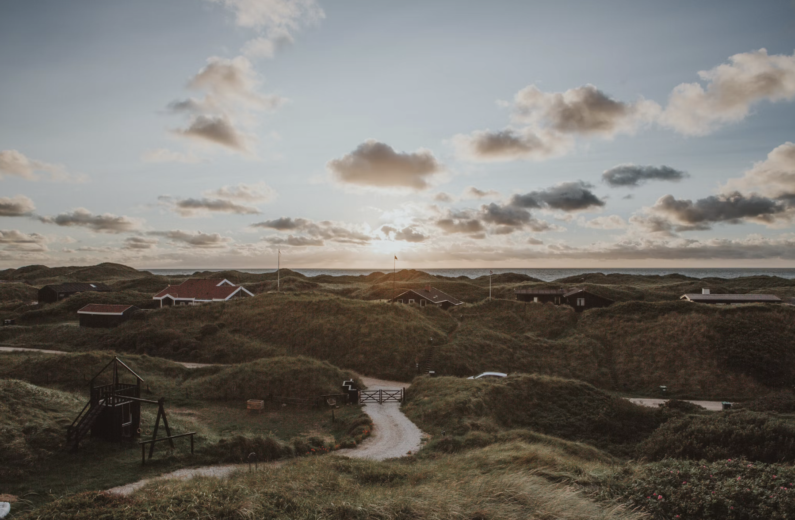
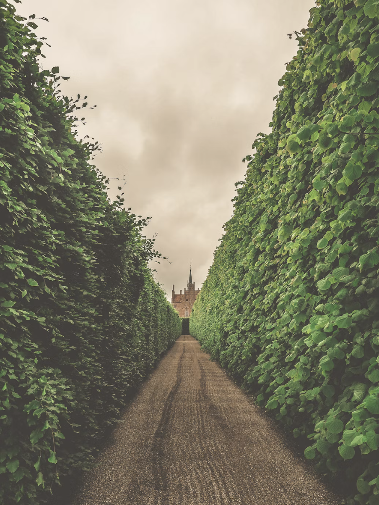
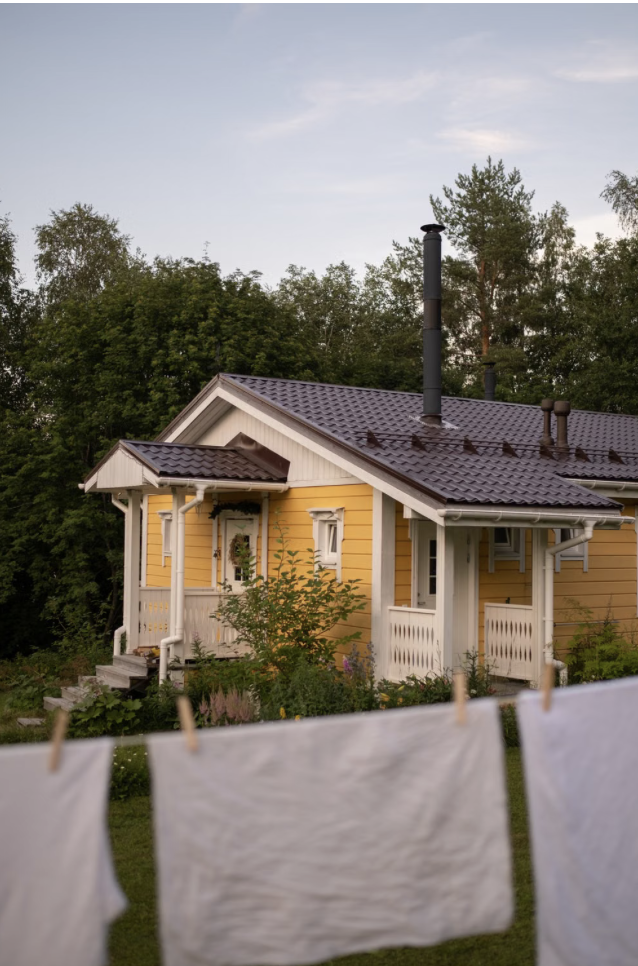
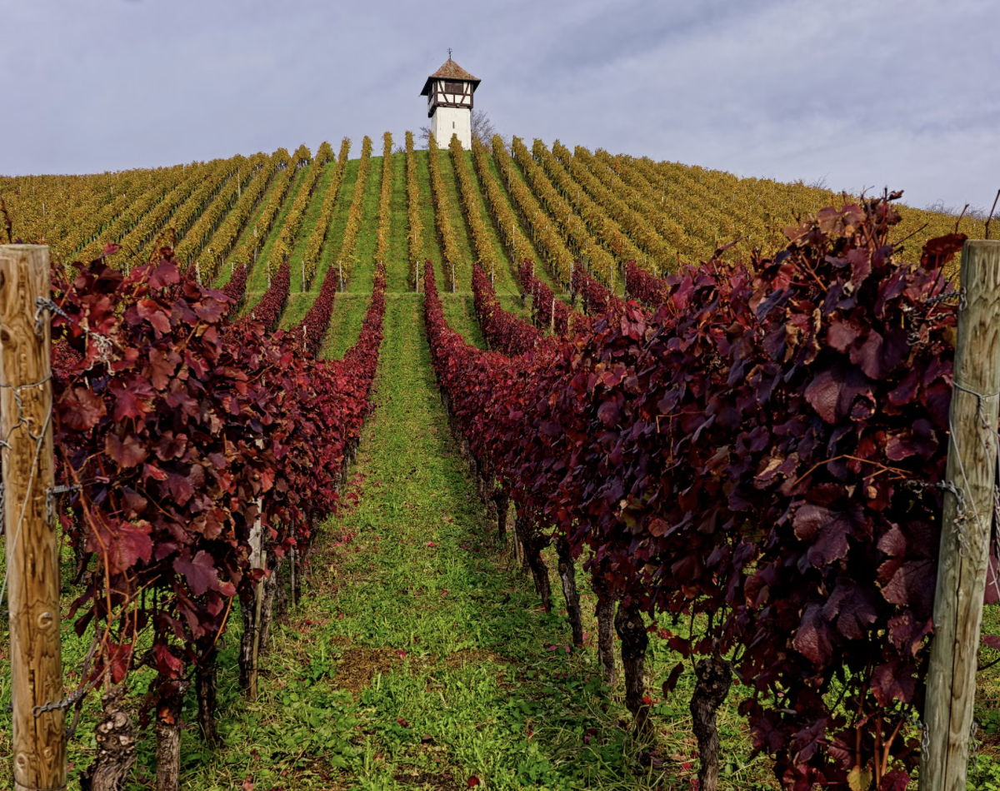
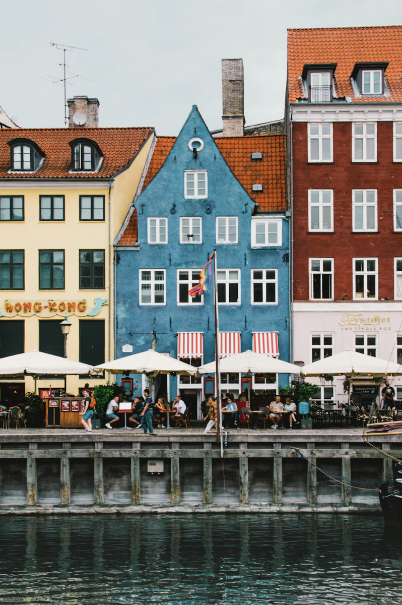
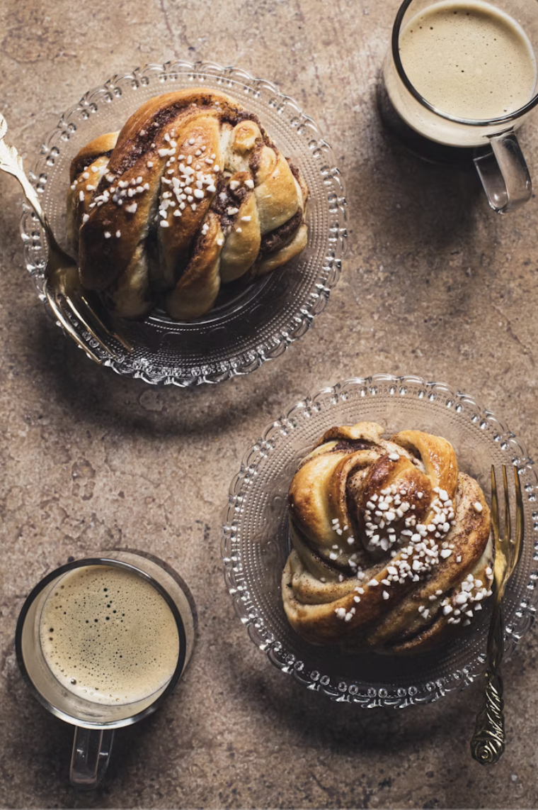

Hvad har du lyst til?


Særlige oplevelser


Oplev vinmarker og smag på produkterne.

Start i Nyhavn og oplev storbyens historie, kultur og hyggelige byliv.

Der er ingen Danmarkstur uden en smag af det danske kaffebord.